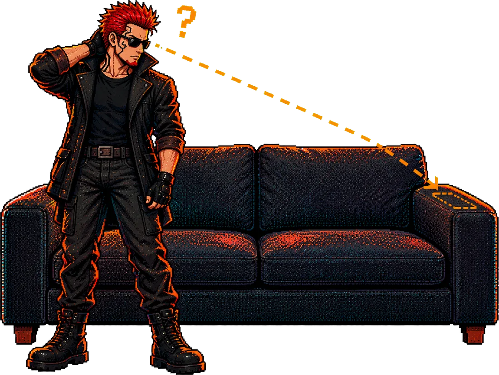

The build log · one person and Claude Code
From a lost remote
to a widget that works
The remote went missing, and so did the backup. This is how a phone became the replacement: two Claude Code sessions, one on a PC and one on the phone itself, both saved word for word in the repo's transcripts folder. Dates are when it happened.

-
"Can we make my TV run faster?"
It started as a question about speeding up a Sony X900F, an Android TV that is still laggy even with its animations turned off. The first answer was a list of safe tweaks and a nudge towards a streaming stick. The owner pushed back, and that became a standing rule:
Never talk me out of hacking my own technology.
The same session looked at omalauncher, the Omarchy-style Android launcher with an Arch Linux inside it, and settled that it belonged on the phone, not the TV.
-
Finding a TV you cannot see
With no remote, there was no way to read the TV's IP address off its own menus, and the Google TV app could not find it either. Claude Code on the PC scanned the home network instead.
- The tell is port 6466, the Android TV remote port. Speakers and displays on the network only showed port 8009.
- The first guess was wrong: a device with only AirPlay open looked like a Sony but was not the TV.
- The right one was confirmed later, once paired: it reported itself as a BRAVIA 4K GB ATV3.
-
Pairing, the step only a person can do
The TV shows a six-character code that has to be typed back in seconds. Claude cannot see the TV, so the owner read each code off the screen and sent it. The first codes expired before they arrived, and then the TV stuck on the old pairing box and would not offer a new one. Unplugging the TV and plugging it back in cleared it, and the next code went through. From then on the PC could press buttons on the TV.
From the guide: you type the code, Claude cannot. -
The widget, and one sentence to install it
Next request: a widget on omalauncher to control the TV. Claude read an existing widget to match its style, then wrote three files:
tv-remote, a Python script that sends one key per call,tv.owl, the widget, and a README. The script was tested against the real TV from the PC and pushed to the phone's config repo.The owner wanted it simple, so the install became a file Claude follows on the phone,
INSTALL-tv.md. On the phone you type one sentence, then pair by hand.All I need to do is type one thing, and then pair it myself with the TV.
-
On the phone: it looked fine and did nothing
The second session ran inside omalauncher's own terminal on the phone. Every tap exited cleanly and the TV ignored all of them. Four things were wrong:
- The BRAVIA drops a key sent within about 300 ms of connecting. The script now waits for the TV's first state, then settles before sending.
- The mute button sent MUTE, which is the microphone. The TV's mute is VOLUME_MUTE.
- The widget declared owl 7, under which a status source is silently ignored, so the header always read "offline". It now declares owl 12.
- The TV accepts one remote connection at a time, so a status poll overlapping a tap failed one of them. The script retries a few times before calling it offline.
Then the redesign the owner asked for, more user friendly and visually appealing with Omarchy swag, filling the 6×9 tile he had stretched it to: frosted keys that take the theme's colours, the D-pad in the accent colour, a key that lights up while its press travels, a live header with the volume and the app on screen, and Netflix, YouTube and Prime shortcuts. The check that counted: the TV's volume climbed from 12 to 14 while the work went on, so taps from the phone were reaching it.
-
Its own repo, a guide, and Zach
Both sessions were saved as transcripts, and the widget moved into this repo, omalauncher-tools, so each tool keeps its own folder and its own story.
GUIDE.mdwas written for someone else to follow, then rendered into an illustrated HTML page and PDF with seven pictures of Zach hunting for the remote under the couch, between the cushions, behind the TV and in the fridge. The same evening the widget learned to call the Free My TV home screen "home".From the guide: step one of the search. -
Worth it, and what "done" means
On 10-23-2026 the tools went through the owner's worth gate: Use 5, Value 5, Setup 1, Upkeep 1, Risk 2, so (5×5) / (1+1+2) = 6.3, a GO with no kill date. One gate covers this repo and the phone's config repo. The record was written down in
WORTH.mdon 10-31.Then three milestones, each closed only by proof: M1, used every day for two weeks with no code change; M2, someone else uses it for a week; and LATER. They are on the milestones page, read live from GitHub.
cat RULES
What this build taught
Prove it on the device
An exit code of 0 meant nothing here. The volume number changing on the TV is the test.
The human step stays human
Pairing needs eyes on the TV. The install stops and hands that one step over, every time.
One sentence to install
A file Claude follows on the phone beats a list of commands to type with your thumbs.